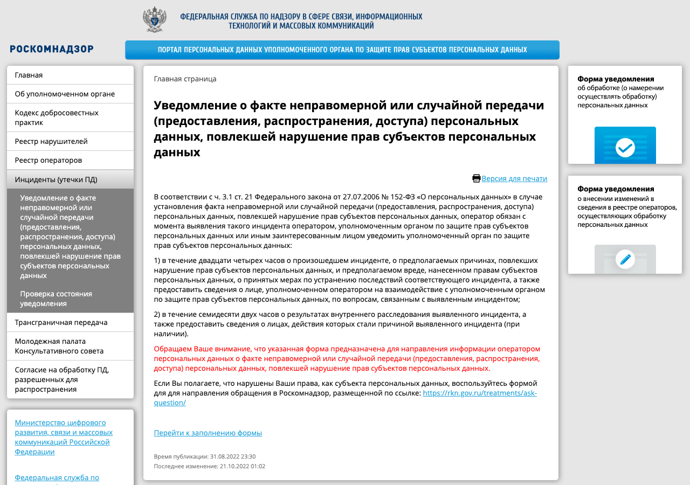

Оператор обязан принимать правовые, организационные и технические меры, чтобы защитить данные от неправомерного доступа, уничтожения, изменения, копирования и распространения (ч. 1 ст. 19). Часть 2 статьи 19 перечисляет, чем это достигается.
Подробные требования установлены постановлением Правительства № 1119 от 01.11.2012 и приказом ФСТЭК № 21 от 18.02.2013. Постановление вводит четыре уровня защищённости: первый — самый строгий, четвёртый — самый мягкий. Уровень зависит от типа угроз, категории данных и числа субъектов. Для SaaS-сервиса с обычными данными (имя, телефон, почта) клиентов и посетителей чаще всего получается третий или четвёртый уровень; для специальных категорий и биометрии — выше.
| Пункт ст. 19 | Что это в SaaS-сервисе |
|---|---|
| Определение угроз | Модель угроз: какие данные где лежат, кто и как может до них добраться |
| Правила доступа | Роли и минимальные права; доступ к базе продакшена — у ограниченного круга; отзыв доступов при увольнении в день увольнения |
| Регистрация действий | Журнал: кто, когда выгрузил или изменил данные; хранение журналов отдельно от базы |
| Обнаружение доступа | Оповещения о массовых выгрузках, подборе паролей, входе с новых адресов (глава 9.1) |
| Восстановление | Резервные копии с проверкой восстановления; копии тоже зашифрованы и тоже в России |
| Учёт носителей | Выгрузки на ноутбуки и флешки запрещены или учтены |
Оператор также взаимодействует с ГосСОПКА — государственной системой обнаружения, предупреждения и ликвидации последствий компьютерных атак — и информирует её об инцидентах, повлёкших утечку (ч. 12 ст. 19).
Срок идёт с момента, когда об инциденте узнал оператор, Роскомнадзор или иное заинтересованное лицо. Если базу выложили на форуме и об этом написал журналист, отсчёт начался с публикации, даже если оператор узнал позже.

Части 12–14 ст. 13.11 устанавливают штраф по объёму утечки. Идентификатор — уникальное обозначение сведений о человеке в системе оператора (глава 3.1). В частях 10–18 ИП отвечает как организация, а строка «должностное лицо» относится только к должностным лицам государственных и муниципальных органов и некоммерческих организаций (примечания 1–2 к ст. 13.11). Коммерческая компания отвечает как юридическое лицо.
Утечка менее чем 1 000 субъектов и 10 000 идентификаторов под части 12–14 не попадает, но остаётся нарушением обязанности по защите и уведомлению: ч. 11 за неуведомление применяется независимо от объёма.
КоАП даёт способ снизить оборотный штраф тем, кто вкладывался в защиту заранее. Условия проверяются вместе.
Для компании с выручкой 2 млрд ₽ это означает: тратить на защиту силами лицензированных организаций не меньше 2 млн ₽ в год в течение трёх лет и ежегодно подтверждать соответствие требованиям документально. По общему правилу повторная утечка обошлась бы в 1–3 % выручки, то есть от 20 до 60 млн ₽. При выполнении условий штраф равен одной десятой минимума: 1/10 от 20 млн ₽ — 2 млн ₽, это ниже нижней границы, поэтому назначат 15 млн ₽. Верхняя граница в 50 млн ₽ применяется к крупным компаниям, у которых 1/10 минимума больше 50 млн ₽.
КоАП наказывает оператора, который не уберёг данные. Уголовный кодекс — тех, кто незаконно получил, хранит, использует или продаёт данные, а также тех, кто создаёт ресурсы для их распространения. Статья 272.1 введена законом от 30.11.2024 № 421-ФЗ.
| Часть ст. 272.1 УК | Что наказывается | Максимум |
|---|---|---|
| ч. 1 | Использование, передача, сбор, хранение компьютерной информации с персональными данными, полученной незаконно | 4 года лишения свободы |
| ч. 2 | То же — данные несовершеннолетних, специальные категории, биометрия | 5 лет |
| ч. 3 | Из корыстной заинтересованности, с крупным ущербом, группой, с использованием служебного положения | 6 лет |
| ч. 4 | Сопряжённое с трансграничной передачей | 8 лет |
| ч. 5 | С тяжкими последствиями или организованной группой | 10 лет |
| ч. 6 | Создание и поддержка сайта, программы, бота для хранения и распространения незаконно полученных данных | 5 лет |
Telegram-бот, который по номеру телефона выдаёт сведения из слитых баз, подпадает под ч. 6: это программа, заведомо предназначенная для распространения незаконно полученных данных. Разработчику такого бота грозит до 5 лет лишения свободы, даже если сам он базы не похищал. Пользователь, который ищет по такому боту, получает и использует незаконно полученные данные — ч. 1. Действие статьи не распространяется только на обработку данных для личных и семейных нужд (примечание 1).
ст. 19 152-ФЗПП № 1119 — уровни 1–4приказ ФСТЭК № 21ГосСОПКА — об инцидентах24 ч — уведомление72 ч — расследованиеч. 11 — до 3 млн за молчание1–10 тыс. субъектов — 3–5 млн10–100 тыс. — 5–10 млн> 100 тыс. — 10–15 млнбиометрия — 15–20 млн1–3 % выручкиот 20 (25) до 500 млнснижение — 1/10 минимума, 15–50 млнУК 272.1 — до 10 лет